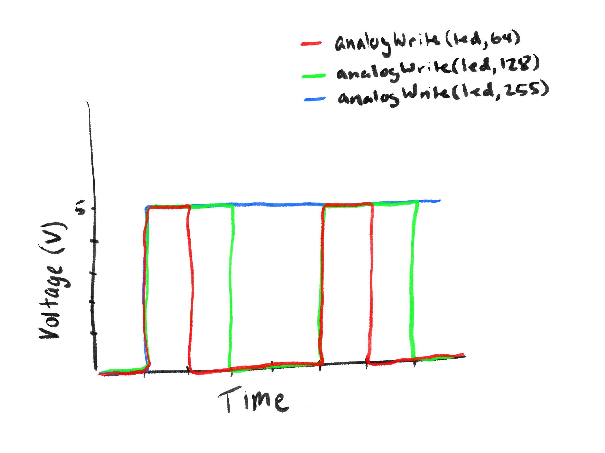

Fade! Animation

A demonstration of the RGB bulb fading through color transitions when button is held.
This project demonstrates a fading RGB LED controlled by an Arduino and a pushbutton. When the button is pressed, the LED smoothly transitions through red, green, and blue colors using PWM (analogWrite). The circuit includes current-limiting resistors for each LED to protect them and a pull-up resistor for the button to ensure reliable input detection. The goal of this assignment is to combine hardware and software concepts including digitalWrite, digitalRead, analogWrite, for-loops, and user input to control multiple LEDs.
A demonstration of the RGB bulb fading through color transitions when button is held.
Wiring schematic for the LED blink circuit.


Breadboard (left) and Arduino ports (right) layout side by side for comparison.
To determine the appropriate resistors for the RGB LED, I used Ohm's Law: V = I * R. First, I noted the forward voltage drop of each LED: red and green LEDs have a 1.8 V drop, and the blue LED has a 3.3 V drop. I also decided on a safe current of approximately 20 mA per LED. Using Ohm's Law, I calculated the resistor values needed to limit current from the 5 V Arduino supply: for the red and green LEDs, R = (5 V - 1.8 V) / 0.02 A = ~160 Ω. For the blue LED, R = (5 V - 3.3 V) / 0.02 A = ~85 Ω.
For simplicity and to preserve materials, I chose to use a 220 Ω resistor for all three LEDs. While this made the blue LED slightly dimmer than the red and green, it was still plenty bright for the project. This approach ensured safe operation of all LEDs while keeping the circuit easy to assemble and materials minimal.
A 10 kΩ resistor is used with the pushbutton to ensure that when the button is not pressed, the input pin reads a definite LOW (0 V) instead of floating, which could cause some erratic behavior. When the button is pressed, the pin is connected to 5 V, registering a HIGH signal, allowing the Arduino to reliably detect the button state.
// pin assignments
int redPin = 3;
int greenPin = 5;
int bluePin = 6;
int buttonPin = 2;
// setup
void setup() {
pinMode(redPin, OUTPUT);
pinMode(greenPin, OUTPUT);
pinMode(bluePin, OUTPUT);
pinMode(buttonPin, INPUT);
}
// function -> set LED color
void setColor(int r, int g, int b) {
analogWrite(redPin, r);
analogWrite(greenPin, g);
analogWrite(bluePin, b);
}
void loop() {
// read button
int buttonState = digitalRead(buttonPin);
// if button is held -> fade colors
if (buttonState == HIGH) {
// fade red -> green -> blue continuously while pressed
for (int i = 0; i < 255; i++) {
if (digitalRead(buttonPin) == LOW) return; // stop immediately if released
setColor(255 - i, i, 0);
delay(5);
}
for (int i = 0; i < 255; i++) {
if (digitalRead(buttonPin) == LOW) return;
setColor(0, 255 - i, i);
delay(5);
}
for (int i = 0; i < 255; i++) {
if (digitalRead(buttonPin) == LOW) return;
setColor(i, 0, 255 - i);
delay(5);
}
}
else {
// if not pressed -> turn LED off
setColor(0, 0, 0);
}
}`
Arduino code used to initiate fading RGB bulb sequence when pushbutton is held.
Below, I sketched a chart to visualize the effect of PWM on LED brightness. Three lines represent the voltage across an LED for different analogWrite values: 64, 128, and 255. The line for analogWrite(64) fluctuates at a low duty cycle, analogWrite(128) at a medium duty cycle, and analogWrite(255) stays at a nearly constant high voltage. This demonstrates how PWM controls the perceived brightness of the LED by rapidly switching it on and off, effectively modulating the average voltage over time.
Chart illustrating PWM voltage levels across an LED for analogWrite values of 64, 128, and 255.
Using the schematic, circuit, and firmware, I assumed the only current draw comes from the LEDs. Each LED channel draws around 15 mA at full brightness. With three channels, the total current is 45 mA. Given a 1200 mAh battery, the worst-case battery life is calculated as: 1200 mAh / 45 mA = ~26.7 hours. During fading, the LEDs are on at varying duty cycles, averaging about half the full current (~22.5 mA), so the battery could last probably 53 hours.
I measured the voltage across one of the LEDs while it was on, and the red LED measured approximately 1.8 V, which matches its theoretical forward voltage. The blue LED, with a 220 Ω resistor, measured about 2.8 V, slightly lower than its typical forward voltage of 3.3 V which is likely due to the resistor limiting the current. These measurements confirm that the LEDs are operating safely, and the voltage drop aligns closely with expectations based on the resistor selection.
I used ChatGPT to help organize and format my webpage. While AI helped improve clarity and presentation, all calculations, measurements, and circuit assembly were done manually. This approach pushed both my efficiency and my understanding of the assignment.